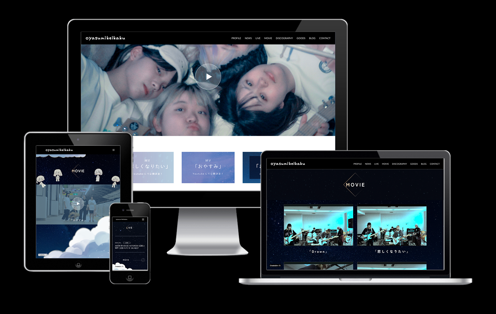
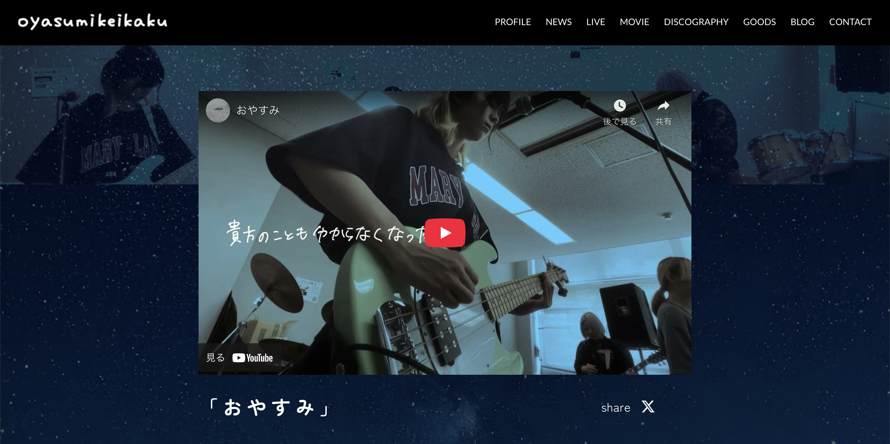
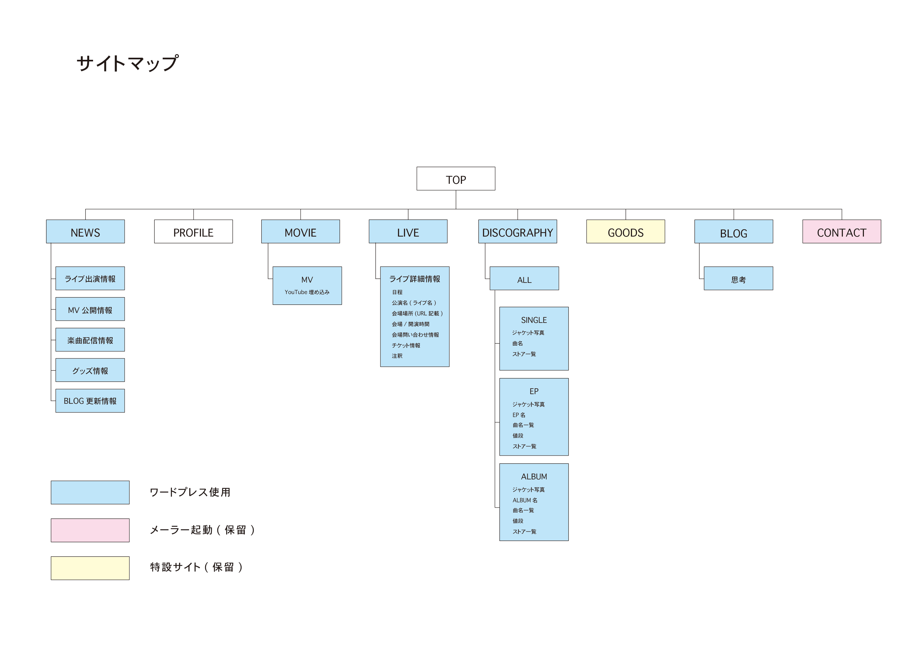

Concept
自身が所属するオリジナルバンド「oyasumikeikaku」(おやすみけいかく)のオフィシャルサイトを制作しました。
バンドのコンセプトである「寂しくて辛い夜中の部屋で聴きたい」「夜中に缶ビールを持って散歩しながら聴きたい」という空気感を重視しました。
- Role
- Design
- Tools
- Studio / Photoshop
- Period
- 5 month (2025.05-10)
01. Design
バンド名「oyasumikeikaku(おやすみけいかく)」の名前通り、「夜」や「休息」を感じさせる深いネイビーや落ち着いたトーンをベースにしました。

02. sitemap
事前にどんな情報を載せるかをまとめて書き出し、構造を可視化させました。
